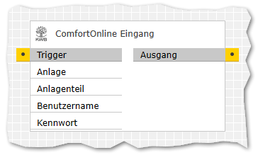

Formelberechnung
Formelberechnung
Inhaltsverzeichnis
Beschreibung
Dieser Baustein ist in der Lage Daten aus dem Comfort Online-Portal des Herstellers für Biomassekessel abzurufen. Die abgerufenen Werte werden als auswertbare Struktur bereitgestellt.
Eingänge
Um Daten abzurufen, muss der
| Bezeichnung | Porttyp | Beschreibung |
|---|---|---|
|
Trigger |
Bool |
Triggert das abrufen der Daten |
|
PlantId |
Text |
Die ID der abzufragenden Anlage (siehe nachfolgende Beschreibung) |
|
PlantSection |
Text |
Die ID des abzufragenden Anlagenteils (siehe nachfolgende Beschreibung) |
|
UserName |
Text |
Benutzername (E-Mail-Adresse) für Comfort Online |
|
Password |
Text |
Password für Comfort Online |
Die
Hier wird nun der Teil nach dem letzten Bindestrich (
Ausgänge
| Bezeichnung | Porttyp | Beschreibung |
|---|---|---|
|
Data |
Text |
Gibt alle erkannten Werte des Anlagenteils als Hinweise:
|
|
Diagnostics |
Text |
Kurztext zur Diagnose. Bekannte Werte:
|